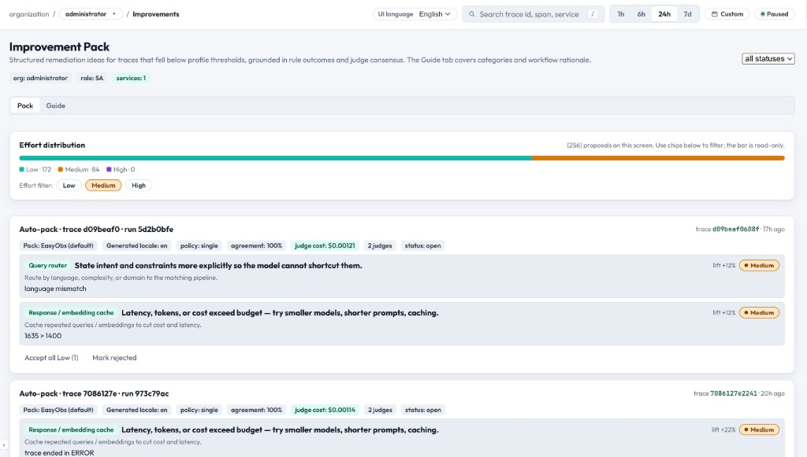

Improvement Pack은 평가 실패를 실행 가능한 엔지니어링 작업으로 변환합니다. 각 팩은 품질 이슈의 근본 원인을 식별하고, 카테고리화된 해결 제안과 노력 등급을 제공합니다.

Improvement Pack 동작 방식
평가 실행이 reasoning과 함께 FAIL 또는 WARN verdict를 만듭니다.
시스템이 reasoning을 분석해 cause code로 매핑합니다.
각 cause code는 1차 카테고리와 2차 디테일에 매핑됩니다.
카테고리는 11개 그룹 중 하나에 속합니다.
각 제안은 노력 수준(Low / Medium / High)을 가집니다.
팩은 팀이 워크플로 상태를 통해 추적할 수 있는 액셔너블 카드 형태로 제공됩니다.
노력 수준
Level
Badge
예상 시간
예시
Low
Green
< 1시간
프롬프트 문구 조정, 가드레일 규칙 추가, temperature 조정
Medium
Yellow
1시간 ~ 1일
프롬프트 템플릿 재구성, retrieval 단계 추가, 청크 전략 개선
High
Red
> 1일
에이전트 아키텍처 재설계, 모델 fine-tune, 새로운 데이터 파이프라인 구축
워크플로 상태
각 improvement pack은 다음 상태들을 거칩니다.
State
의미
액션
open
새로 식별되었으며 트리아지 대기 중.
리뷰 후 우선순위 결정.
in_progress
팀이 적극적으로 수정 작업 중.
제안 사항 구현.
resolved
수정 적용 완료, 검증 대기.
평가를 다시 실행하여 확인.
dismissed
해당 없음 또는 수정하지 않기로 결정.
아카이브(히스토리에는 남음).
카테고리 카탈로그 — 11 그룹, 46 카테고리
Group 1: Prompt Engineering
#
Category
Effort
설명
1
System prompt clarity
Low
시스템 지시가 모호하거나 모순됨.
2
Few-shot examples
Low
프롬프트 내 예시가 누락되었거나 품질이 낮음.
3
Output format instruction
Low
응답 형식이 명시적으로 지정되지 않음.
4
Chain-of-thought guidance
Medium
단계별 추론 지시가 부족함.
5
Prompt decomposition
Medium
지나치게 복잡한 단일 프롬프트로, 분리가 필요함.
Group 2: Context & Retrieval
#
Category
Effort
설명
6
Retrieval relevance
Medium
검색된 청크가 주제에서 벗어났거나 관련성이 낮음.
7
Context window overflow
Medium
컨텍스트가 너무 많이 채워져 모델이 핵심을 놓침.
8
Chunk size tuning
Medium
작업에 비해 청크가 너무 크거나 작음.
9
Missing knowledge source
High
필요한 정보가 어떤 지식 베이스에도 없음.
10
Embedding model quality
High
임베딩 모델이 의미적 매칭을 충분히 잘 하지 못함.
Group 3: Model Selection
#
Category
Effort
설명
11
Model capability gap
High
현재 모델이 요구되는 추론 능력을 갖추지 못함.
12
Temperature misconfiguration
Low
temperature가 너무 높거나(환각) 너무 낮음(반복).
13
Token limit exceeded
Medium
max_tokens 설정으로 응답이 잘림.
14
Model version drift
Low
provider 업데이트 이후 모델 동작이 달라짐.
Group 4: Tool Usage
#
Category
Effort
설명
15
Tool selection error
Medium
에이전트가 작업에 맞지 않는 도구를 선택함.
16
Tool argument formatting
Low
도구에 전달된 파라미터 형식이 잘못됨.
17
Tool description clarity
Low
도구 설명이 불명확해 오용을 유발함.
18
Missing tool availability
High
필요한 도구가 에이전트의 도구 셋에 없음.
Group 5: Safety & Compliance
#
Category
Effort
설명
19
Harmful content generation
Low
출력에 안전하지 않거나 편향·유해한 내용 포함.
20
Data leakage
Medium
출력에 PII나 민감 데이터가 노출됨.
21
Guardrail bypass
Medium
adversarial 입력이 안전 필터를 우회함.
22
Policy violation
Low
출력이 조직의 콘텐츠 정책을 위반함.
Group 6: Hallucination & Accuracy
#
Category
Effort
설명
23
Factual hallucination
Medium
원본에 없는 거짓 사실을 생성.
24
Source attribution error
Low
출처 인용이 부정확함.
25
Numerical accuracy
Medium
출력에 수학·통계 오류가 있음.
26
Temporal confusion
Low
날짜·타임라인·순서가 뒤섞임.
Group 7: Coherence & Consistency
#
Category
Effort
설명
27
Self-contradiction
Low
응답이 단락 간에 스스로 모순됨.
28
Context drift
Medium
응답이 원래 질문에서 벗어남.
29
Multi-turn inconsistency
Medium
대화의 이전 턴과 모순됨.
30
Instruction following
Low
사용자 지시를 무시하거나 부분적으로만 따름.
Group 8: Performance & Latency
#
Category
Effort
설명
31
Excessive latency
Medium
총 응답 시간이 허용 임계를 초과함.
32
Redundant LLM calls
Medium
배치·캐시할 수 있는데 불필요하게 여러 번 호출함.
33
Token waste
Low
장황한 프롬프트가 불필요하게 많은 토큰을 소비함.
34
Retry storms
Medium
일시적 실패로 인해 재시도가 폭주함.
Group 9: Agent Architecture
#
Category
Effort
설명
35
Planning loop failure
High
에이전트가 무한 plan-execute 루프에 갇힘.
36
Delegation logic
High
멀티 에이전트 위임이 충돌하는 결과를 만듦.
37
Memory management
High
에이전트 메모리 오버플로 또는 stale 컨텍스트.
38
Fallback handling
Medium
컴포넌트 실패 시 graceful degradation이 없음.
Group 10: Data Quality
#
Category
Effort
설명
39
Training data bias
High
모델 응답이 학습 데이터의 편향을 그대로 반영함.
40
Stale knowledge
Medium
지식 베이스가 최신 정보로 업데이트되지 않음.
41
Input preprocessing
Medium
사용자 입력이 적절히 정제·정규화되지 않음.
42
Label quality in golden set
Medium
그라운드 트루스 라벨이 부정확하거나 모호함.
Group 11: Integration & Reliability
#
Category
Effort
설명
43
API error handling
Low
LLM provider의 API 오류가 처리되지 않음.
44
Rate limiting
Medium
provider rate limit에 걸려 실패가 발생함.
45
Serialization error
Low
JSON / 구조화 출력 파싱 실패.
46
Timeout configuration
Low
LLM 호출에 적절치 않은 timeout 값.
Cause Code 매핑
시스템은 LLM 저지의 reasoning 분석으로 생성된 52개의 내부 cause code를 사용하며, 이를 위 46개 카테고리로 매핑합니다. 여러 cause code가 같은 카테고리로 매핑될 수 있고, 이 매핑 덕분에 미묘한 실패 사유도 모두 액셔너블한 카테고리로 수렴됩니다.
UI/UX 흐름: 원시 judge finding이 안정된 카테고리로 정규화된 후, 노력·워크플로 컨트롤이 포함된 트리아지 카드로 렌더링됩니다.